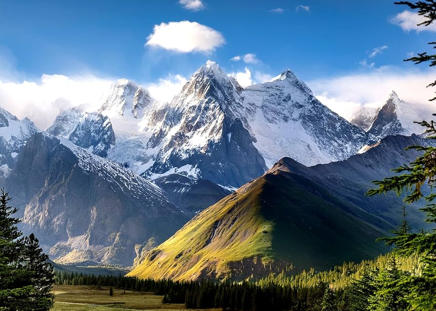
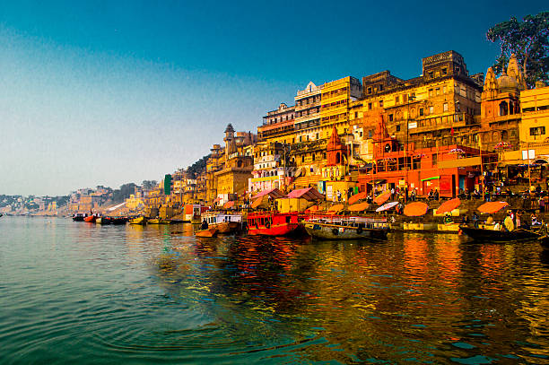
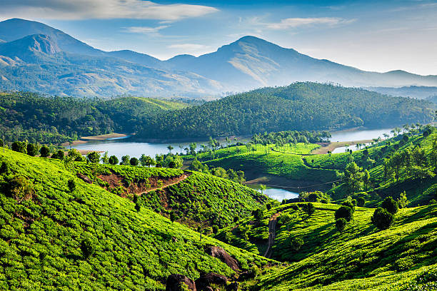

NATURE OF THE WORLD

Mountains are majestic natural landforms that rise high above the surrounding terrain with steep slopes and defined summits. They form through powerful geological processes such as tectonic plate collisions, volcanic activity, or block faulting over millions of years.
_________________________________________________________________________________________________________________

Mountain forests are unique ecosystems found on the slopes and high elevations of mountainous terrain. As altitude increases, temperatures drop and weather conditions change, causing the plant and animal life to shift in distinct layers.
_______________________________________________________________________________________________________________________

Kashi, also known as Varanasi or Banaras, is one of the world's oldest continually inhabited cities and the spiritual capital of India. Located on the western bank of the Ganges River in Uttar Pradesh, the city is deeply dedicated to Lord Shiva and is famous for housing the Shri Kashi Vishwanath Temple, one of the twelve sacred Jyotirlingas.
_______________________________________________________________________________________________________________________

A mountain is a large natural landform that rises sharply above its surrounding terrain, usually reaching a height of at least 1,000 to 2,000 feet (300 to 610 meters). Unlike flat plateaus, mountains feature a confined summit or peak and steep, sloping sides with exposed bedrock. They are rarely found alone and typically form long chains called mountain ranges, such as the Himalayas or the Andes, through tectonic plate collisions, volcanic activity, or block faulting over millions of years. Beyond their striking appearance, mountains act as vital global "water towers" that store and supply most of the world's freshwater.
_____________________________________________________________________________________________________________________________
Shimla, the capital of Himachal Pradesh, is a famous hill station nestled in the north-western Himalayas at an elevation of about 2,200 meters. Known as the "Queen of Hills", it earned prominence as the summer capital of British India, a legacy still visible in its colonial-style architecture, the historic Christ Church, and the bustling pedestrian avenue of The Mall. Spread across seven scenic hills and surrounded by dense pine and deodar forests, the city blends old-world charm with modern appeal, drawing visitors year-round for its pleasant summer weather, winter snowfall, and the iconic UNESCO Kalka-Shimla Toy Train ride.
___________________________________________________________________________________________________________________________________